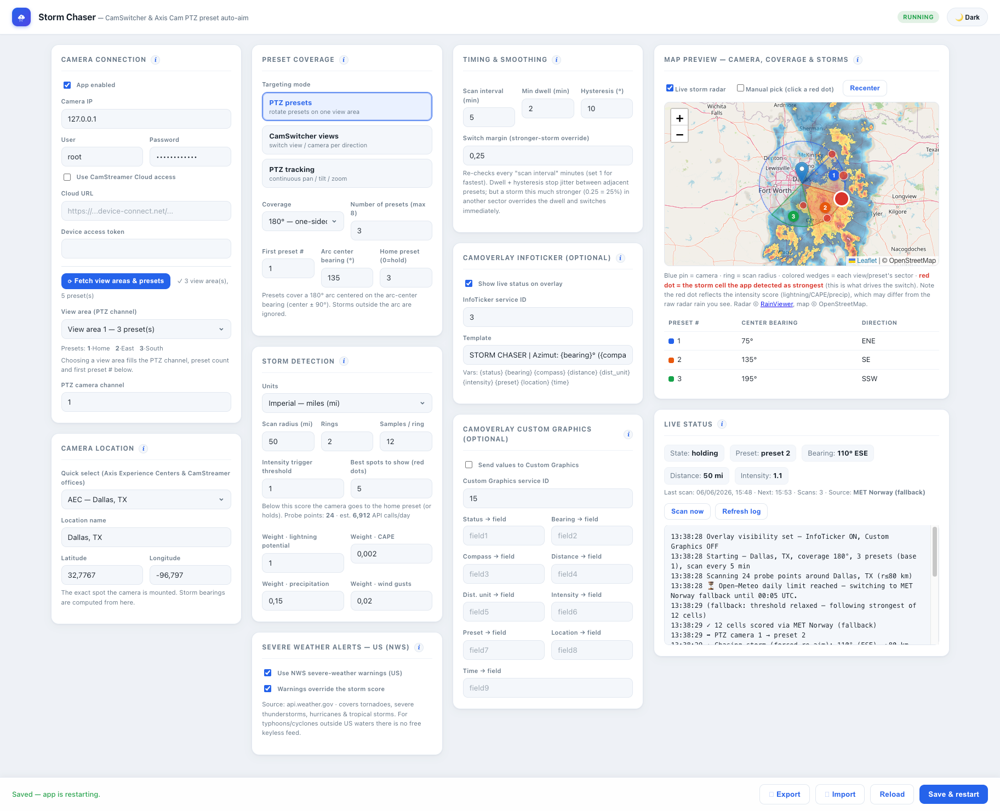
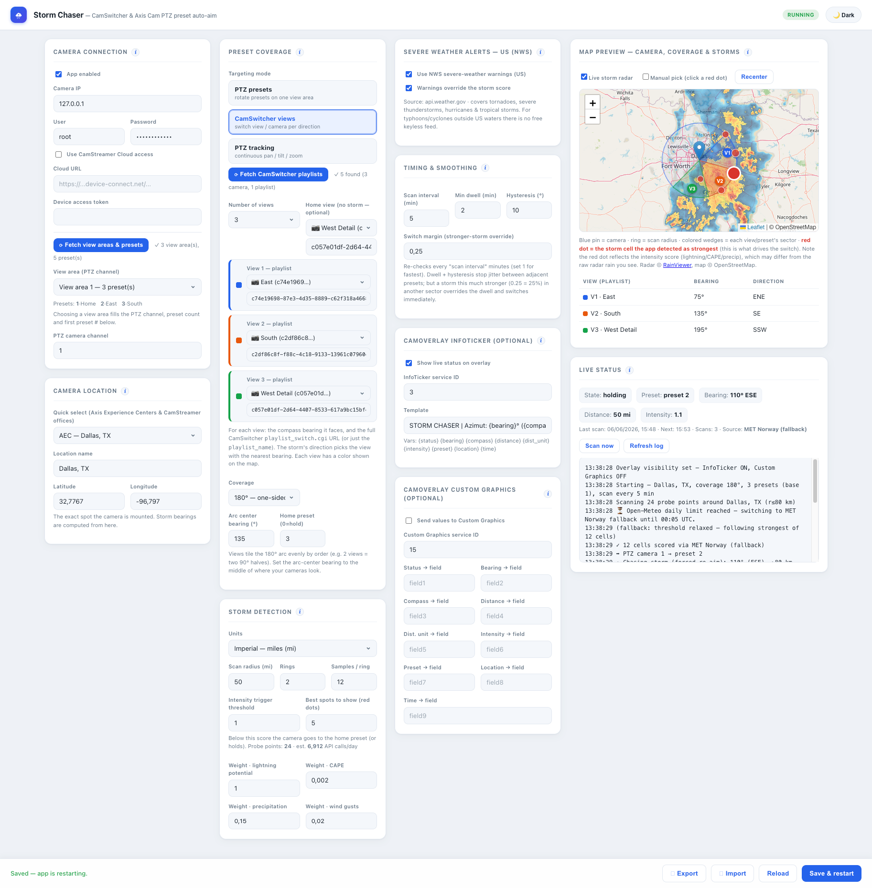
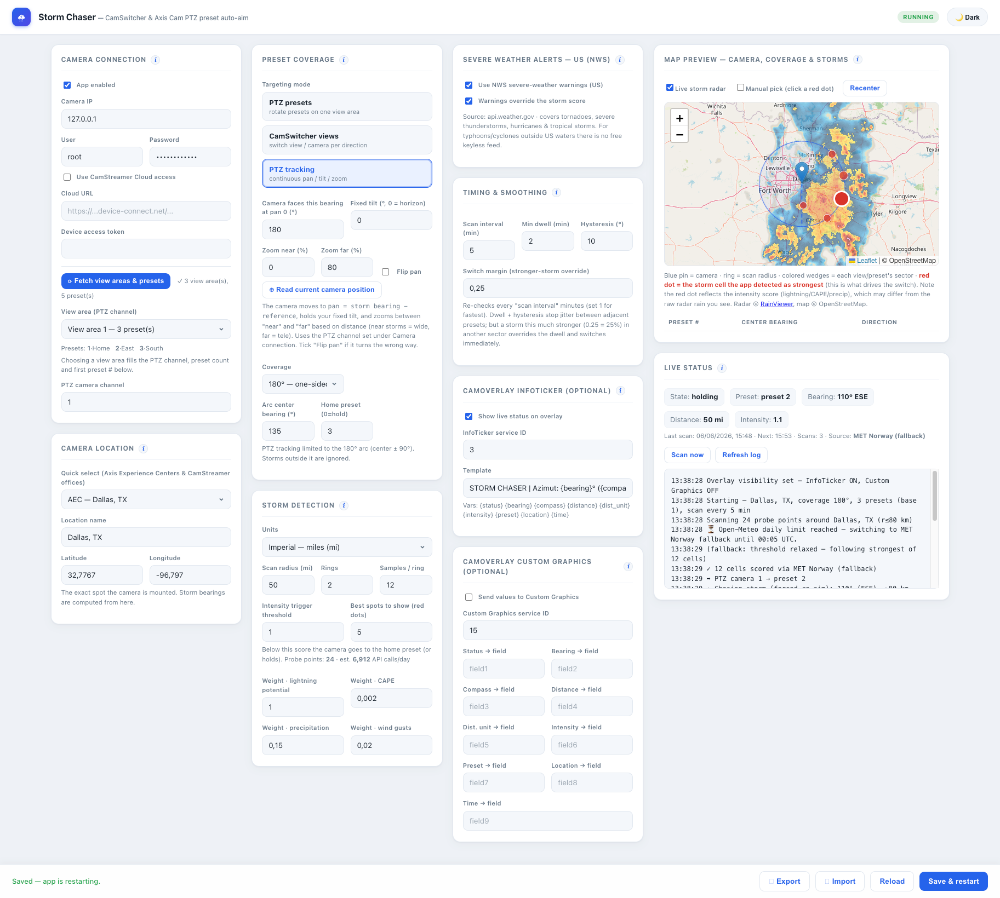
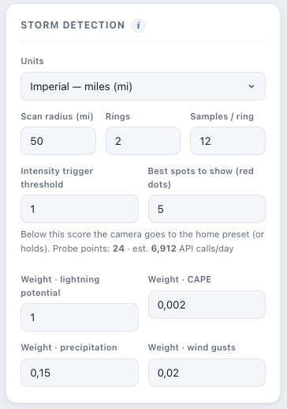
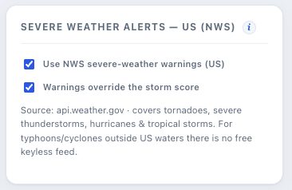
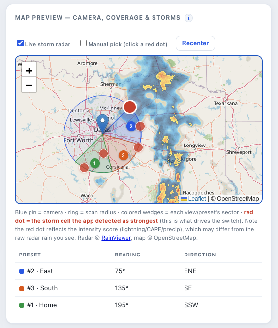
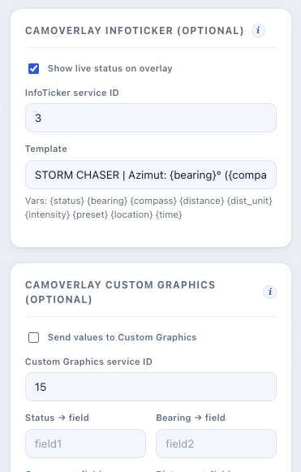
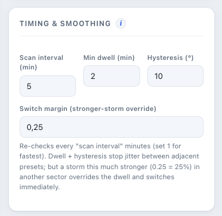

⛈
Point your camera at the storm — automatically.
Storm Chaser is a CamScripter microapp for Axis IP cameras. It scans the weather around the camera, finds the strongest cell, and aims at it via PTZ preset, CamSwitcher view, or continuous pan / tilt / zoom.
Axis · CamScripter
No API key
US NWS alerts
Free weather data
See it in action
A quick look at Storm Chaser tracking live weather.
Three ways to track
Pick the mode that fits your hardware — switch any time. Click + on a screenshot to enlarge.



What it does
Everything runs on the camera; the map & tuning live in the settings UI. Click + to enlarge.






Get started
Three steps from zip to chasing storms.
- Install CamScripter on your Axis camera (ARTPEC-6 or newer).
- Upload storm_chaser_3_0_2.zip via CamScripter → Add package.
- Open the settings UI, set camera, location and a targeting mode, then Save & restart.
Full detail: the bundled UserGuide.md or the illustrated Operations guide (PDF).